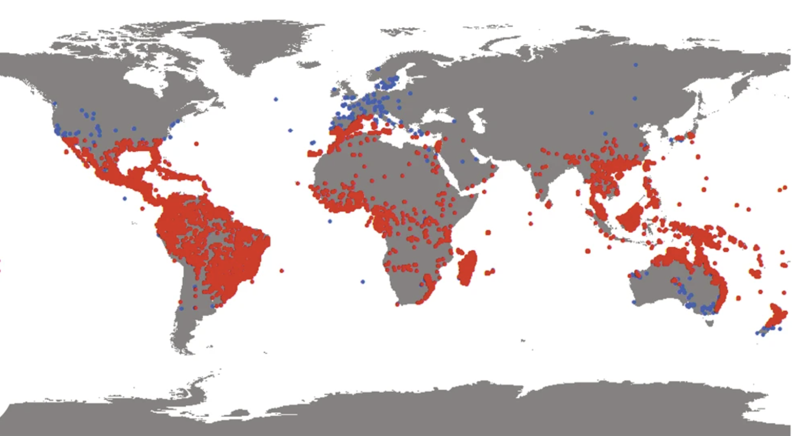

Challenge 3: Highway to the Unknown
A car’s moving quickly along a highway, luckily there are some visible structures in the rear-view mirror and on the road-side to help you with your geolocation.
The prominent building bears the name of a person, what is that name?
Looking for language information
I can see text in English on the rearview mirror saying objects in the mirror are closer than they appear.
I can't see any street signs, and the numberplate on the car is too blurry to get any information from.
Plants and landscape
In the background I can see palm trees and other trees. This looks like a hot weather location.

Highway information
There is no barrier in the middle of the road, and I don't see any street markings.
The car is driving with some kind of dangerously secured barrel on the roof.
I can see the reflection of a bridge in the rearview mirror, behind the car.
To me these factors indicate a developing country. It is probably one that speaks English.
When I look at countries in which palm trees are distributed, most of the English-speaking countries are not developing countries.
However, Nigeria, on the west coast of Africa, is one of the largest English-speaking countries in the world.
Nigeria also has a heavy distribution of palm trees.
Image search
I zoomed in on the building in the background and searched on Google Images.
One of the images from Wikimedia Commons is the Daughter of Abraham foundation building, in Nigeria.
Text search
When I search for the building, and the words I can make out from the text, which looks to be "Useni Hall", I get a Facebook event result for "Julie Useni Hall".
Google street view
When I search for the Daughters of Abraham Foundation on Google Street view, I can see the matching building.
In the background when I turn my view around, I can see the bridge over the highway.
The road has been improved, but I feel pretty certain it's the right place.